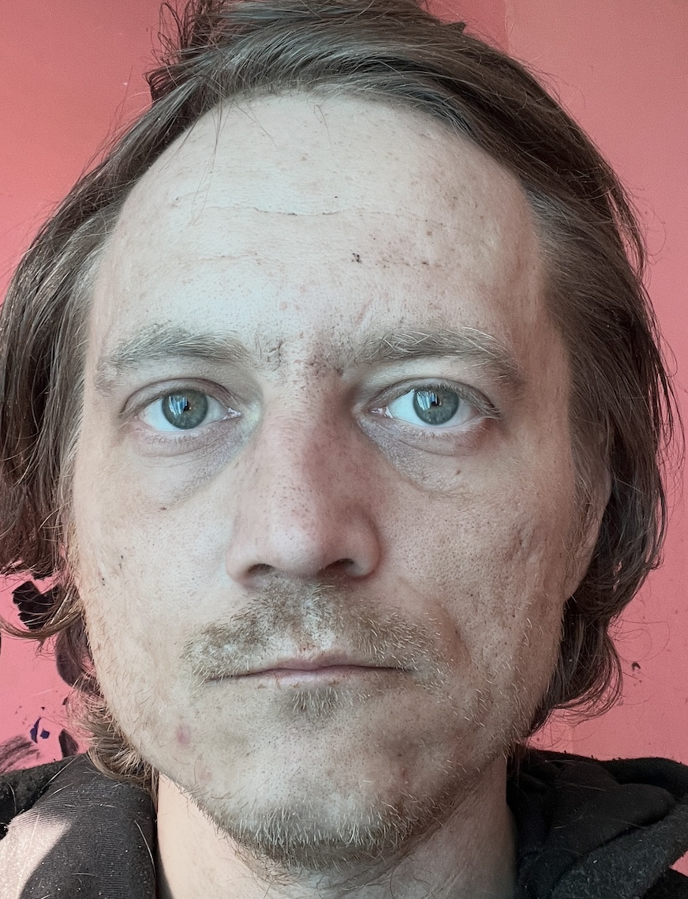
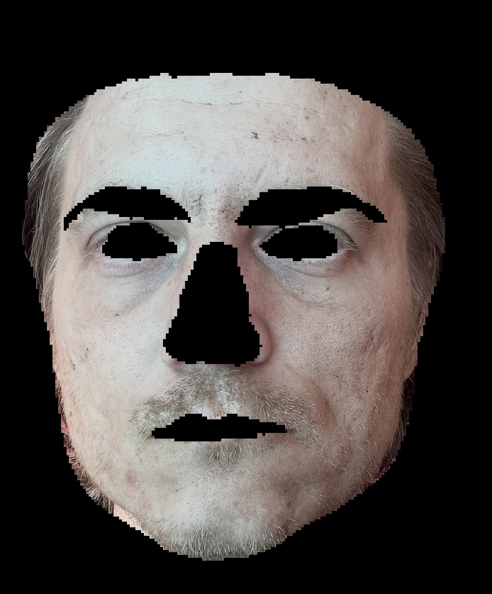
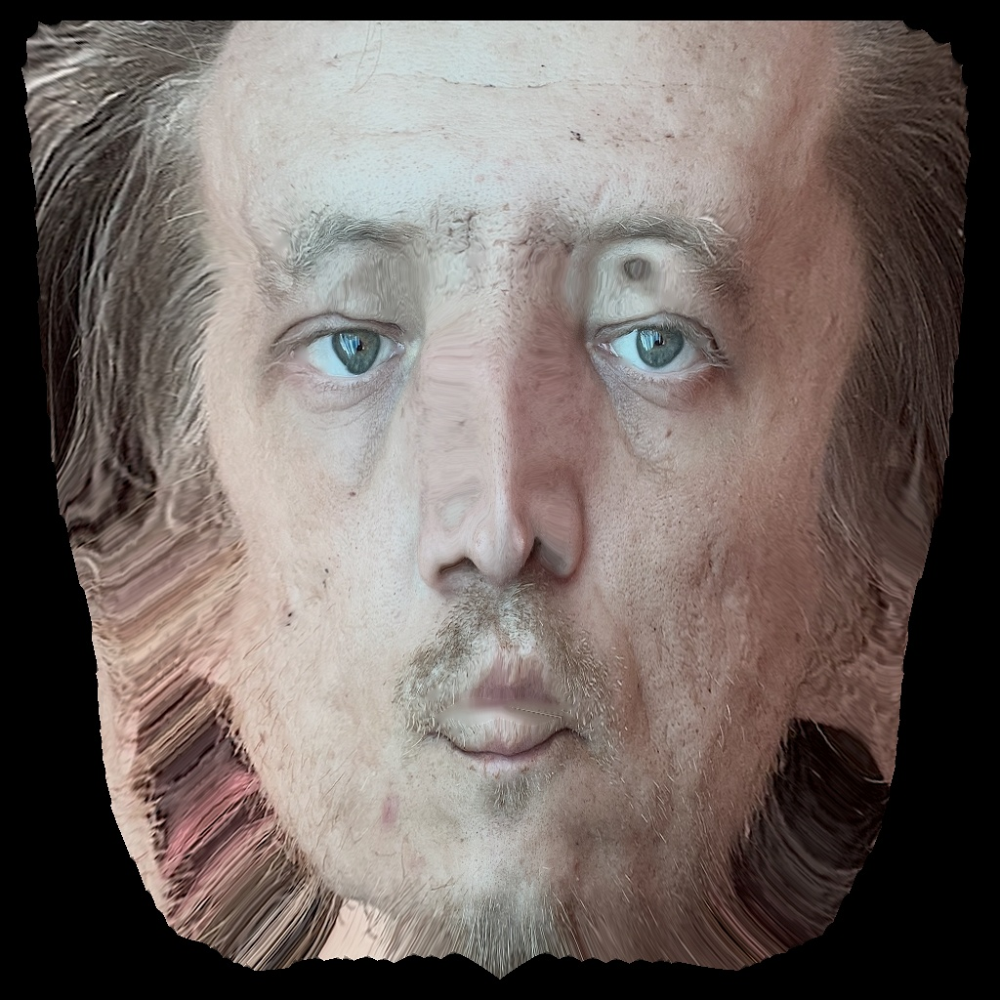
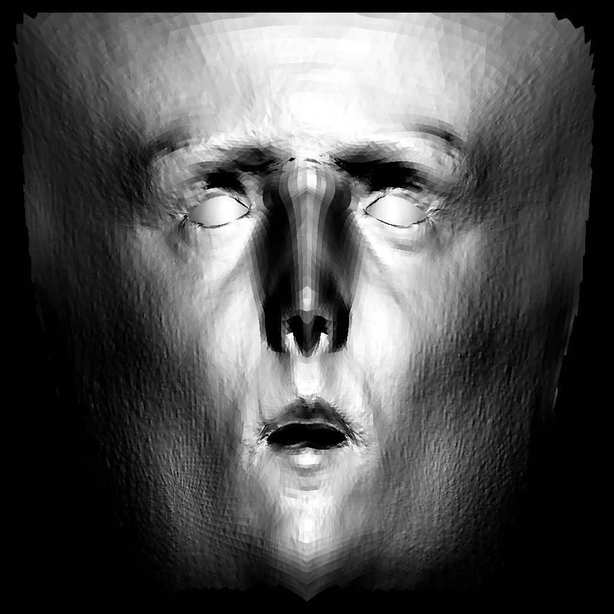

Single Photo Processing Analysis v2
File: 1.png | Processed: 2026-04-30T23:42:52.087608




Source: hpe
| Parameter | Value |
|---|---|
| X | 39.0 |
| Y | 216.0 |
| Width | 750.0 |
| Height | 863.0 |
| Confidence | N/A |
| 5 Keypoints | 0 points detected |
Mesh files saved in: results/mesh/
| Metric | Value | Method |
|---|---|---|
| cranial_face_index | 0.86 | - |
| canthal_tilt_L | 42.00 | - |
| canthal_tilt_R | 3.11 | - |
| true_jaw_width | 150.93 | - |
| nose_projection_z | 0.00 | - |
| eye_asymmetry_index | 45.11 | - |
| calculation_method | hybrid_mesh_and_landmarks | - |
| vertices_analyzed | 35709.00 | - |
| Method: 3d_based | ||
| Metric | Predicted | Actual | Diff | Status | Reasoning |
|---|---|---|---|---|---|
| Silicone Probability | 0.22 | 0.05 | 0.17 | ⚠️ | Блики на лбу выглядят естественными (UV анализ) |
| Pore Density | 0.55 | 0.88 | 0.32 | ❌ | Средняя плотность пор на оригинальных пикселях щек |
| Spot Density | 0.28 | 0.47 | 0.19 | ⚠️ | Пигментация на скулах (анализ маскированного фото) |
| Wrinkle Forehead | 0.42 | 0.52 | 0.10 | ✅ | Лобные морщины (анализ маскированного фото) |
| Global Smoothness | 0.45 | 0.50 | 0.05 | ✅ | Естественная текстура (UV анализ) |
| Albedo Uniformity | 0.58 | 0.50 | 0.08 | ✅ | Нормализованный цвет кожи (UV анализ) |
Detailed console output: processing_v2.log
JSON result: result.json
| File | Description |
|---|---|
raw/original.jpg | Original image copy |
raw/face_crop.jpg | Refined skin-only crop |
raw/uv_texture_hd.jpg | HD UV texture |
raw/uv_confidence_mask.jpg | Confidence Mask |
raw/vertices.npy | 3D vertices (NumPy) |
raw/face_mesh.obj | Wavefront OBJ mesh |
report.html | This report |
processing_v2.log | Console log |
result.json | Complete result (JSON) |